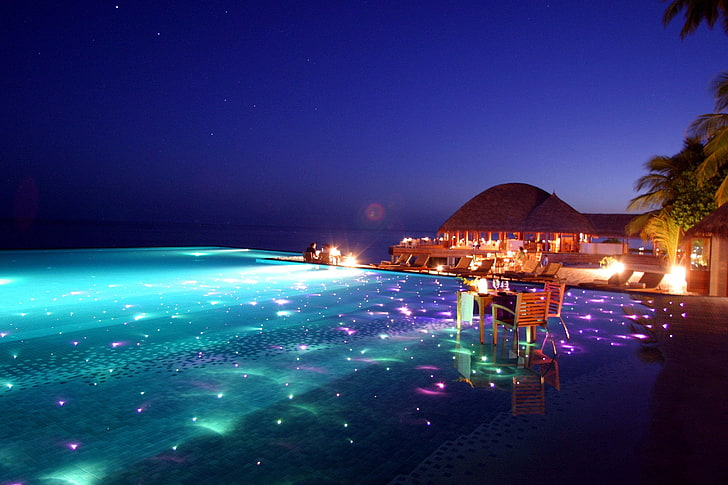

My Favourite Place To Visit !
Maldives Island
My favourite place to visit is Maldives. The place has the most relaxing atmosphere in the world. Maldives, in full Republic of Maldives, also called Maldive Islands, independent island country in the north-central Indian Ocean. It consists of a chain of about 1,200 small coral islands and sandbanks (some 200 of which are inhabited), grouped in clusters, or atolls. The islands extend more than 510 miles (820 km) from north to south and 80 miles (130 km) from east to west. The northernmost atoll is about 370 miles (600 km) south-southwest of the Indian mainland, and the central area, including the capital island of Male (Male’), is about 400 miles (645 km) southwest of Sri Lanka.